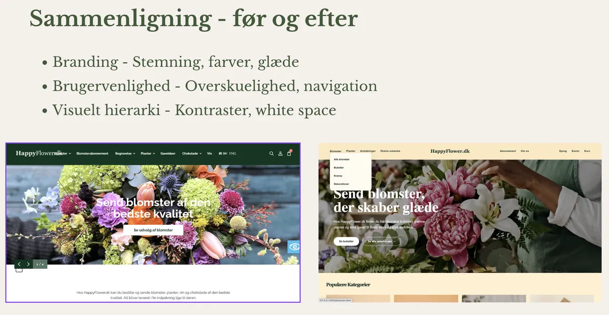
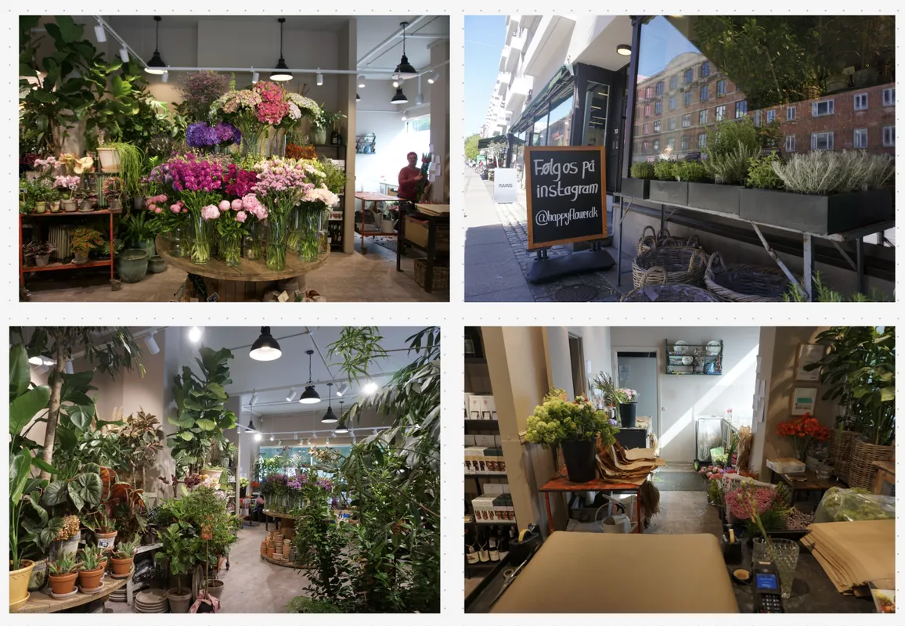

T5 Grundlæggende brugergrænsefladeudvikling
I tema 5 arbejdede vi i grupper med redesign af en selvvalgt virksomheds hjemmeside. Opgaven gik ud på at analysere virksomhedens eksisterende website og udvikle et nyt og mere brugervenligt design med fokus på både funktionalitet og visuelt udtryk.Processen startede med research og analyse af virksomheden, målgruppen og konkurrenter. Vi arbejdede med brainstorming, moodboards, style tiles og wireframes for at udvikle idéer til redesign og skabe et visuelt koncept.

Opgave, proces og udførsel
Tema 5 var vores første tema med grupper. Her skulle vi redesigne en virksomheds hjemmeside. Opgaven gik ud på at analysere virksomhedens eksisterende website og udvikle et nyt design med fokus på brugeroplevelse, funktionalitet og visuelt udtryk. Vores proces startede med research og analyse af virksomheden, målgruppen og konkurrenter. Vi arbejdede med brainstorming, moodboards, style tiles, wireframes og brugertests for at udvikle idéer og forbedre designet.
Herefter lavede vi digitale prototyper i Figma og producerede nyt indhold til hjemmesiden. I udførelsen af opgaven lavede vi interviews, brugertyper og brugertests for at undersøge brugerbehov og forbedre brugeroplevelsen. Herefter udviklede vi digitale prototyper i Figma og producerede nyt indhold til hjemmesiden. Hele processen blev dokumenteret løbende og afsluttet med en præsentation. Opgaven lærte os alle om samarbejde, struktur og hvordan vi alle kan hvert vores, men sammen kan mere. Vi lærte fra os og blev bedre sammen.
